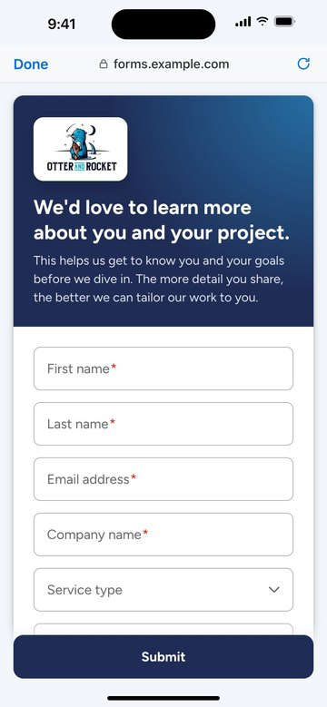
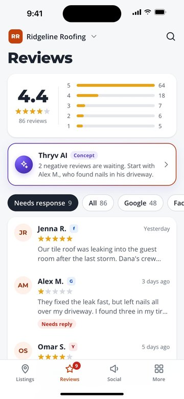

Lead product designer · Web and mobile · Design systems and AI products
Design strategy,
from the problem up.
I untangle complex product and business problems and build systems that scale.
I lead product design across B2B SaaS, fintech, nonprofits and government, from research and roadmaps to launch, and mentor other designers.
Case studies
Merging seven form builders into one
The problem
Keap had seven form builders doing the same job, and no team owned the whole problem, so I took it on.
My call
I argued for merging them into one builder instead of a full rebuild.
What it unlocked
That one builder is what lets AI draft a complete form from a prompt.

Building the Branding Center
A business’s brand lived in a document outside the product, so changing a logo meant redoing every email and landing page by hand. I designed one place to keep the brand that every builder reads from.

Moving listings to a new vendor
Picking the vendor wasn’t my call. I set the usability bar every vendor had to meet, got an AI requirement into the scorecard, and specified a layer that keeps the experience the same whichever one won.
Work across industries
Fintech
Widget Cloud, an investment app for web and phone. Freelance, as the only designer.
Read case studySales enablement
Allego’s redesign for web, tablet and phone. I led the final design.
Read case studyHumanitarian
Esri dashboards for the Red Cross and Feeding America.
Conservation
Story maps for the Smithsonian and the Jane Goodall Institute, and web and mobile apps for the Forest Stewardship Council.
Local government
Mobile apps for Sacramento County, and data and map products for government agencies.
Supply chain
Supply Savvy, a supply chain web app for makeup supplies.
Sports analytics
Gameday, a data analysis app for basketball.
Award
First place in the Esri Ocean Storymap Contest, for the Smithsonian whale story map.
Experience
Keap, acquired by Thryv Lead product designer · platform
Led design for two development teams across forms, branding, listings and AI, on web and mobile, and designed the Branding Center, which sixteen teams now build on. I drove a design system migration that replaced duplicate components with shared patterns, and set the research and testing standards behind product decisions. I ran the design team meetings and mentored six junior designers, one of whom now leads their own area.
Blue Raster Senior UX/UI designer · agency
Designed web and mobile data visualization and geospatial products for nonprofits, government agencies and enterprise clients, owning research through implementation. Clients included the Red Cross, Feeding America, the Smithsonian, the Jane Goodall Institute, the Forest Stewardship Council and Sacramento County. My work for the Red Cross and the Smithsonian helped save people and wildlife, and my Smithsonian whale story map won first place in the Esri Ocean Storymap Contest.
Allego Product designer · enterprise SaaS
Designed sales enablement tools for an enterprise learning platform on web, tablet, iOS and Android, and led the final design of its 2020 redesign.
Monterey DevOps Visual designer · custom software
UI and visual design across client projects for a custom software development firm.
Education
UX ManagementNielsen Norman Group
MFA, Visual Communication DesignRochester Institute of Technology
BA, Graphic DesignUniversity of Shanghai for Science and Technology
Awards
Esri Ocean Storymap ContestFirst place · Smithsonian whale story map · 2021
CGDA Visual Communication DesignExcellence award · 2016
My approach
I measure first
I pull the current numbers before I design anything, or I can’t tell you what changed. On forms, that’s how I found the most used form had gotten worse after its rebuild.
I argue in business terms
Leadership decides on cost, risk and the roadmap, so that’s how I make the case. On forms, I made the case against a rebuild of twelve months or more and shipped one builder in stages instead.
I write the rules down
Sixteen teams build on the Branding Center, and I can’t sit in on all their reviews. So I wrote down three rules every surface has to follow, whoever builds it.
I design the messy cases
Errors, empty accounts and data that doesn’t match. Those turn into support tickets, so I design them early. In the Branding Center, that meant accounts with no logo, or a logo that didn’t match the profile.
Denise Barrett
I build systems and use AI to move faster.
I’ve spent over a decade in product design. Most recently, I worked on landing pages, email broadcasts, forms and automation tools for small businesses, on web and mobile. Before that, I designed web and mobile apps for enterprise learning, fintech and geospatial mapping.
My work centers on creative problem solving. I lead design workshops, align design with business goals, and turn scattered versions of the same feature into one system everyone can use.
I do the research and product work around the design too. I plan and run studies, from interviews and surveys to usability tests and Kano studies, and use what I find to change the roadmap. I’ve owned roadmaps and priorities, written requirements, and run backlogs and sprints.
I use AI to sort through research, draft flows and copy, and turn my Figma files into working prototypes. The forms and Branding Center prototypes in my case studies were built this way, and I still make the calls on what ships and what doesn’t.
I lead without needing a manager title. I ran our design team meetings, shared team management work with the Design Manager, and mentored six junior designers. One of them now runs their own area independently.
Skills
Let’s talk
I want to help teams solve complex business and product problems, whatever shape they take. I’m open to every kind of challenge, including research and product work.
Looking for web and mobile product design, from platforms and design systems to AI, in B2B SaaS or any other industry, where the job is setting direction across more than one product area. Remote US.
Or write to denisexue106@gmail.com